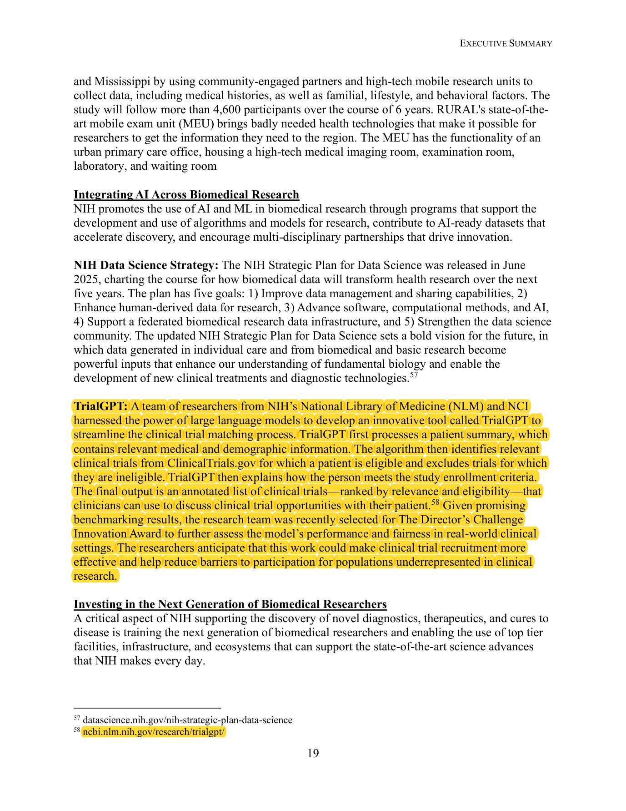
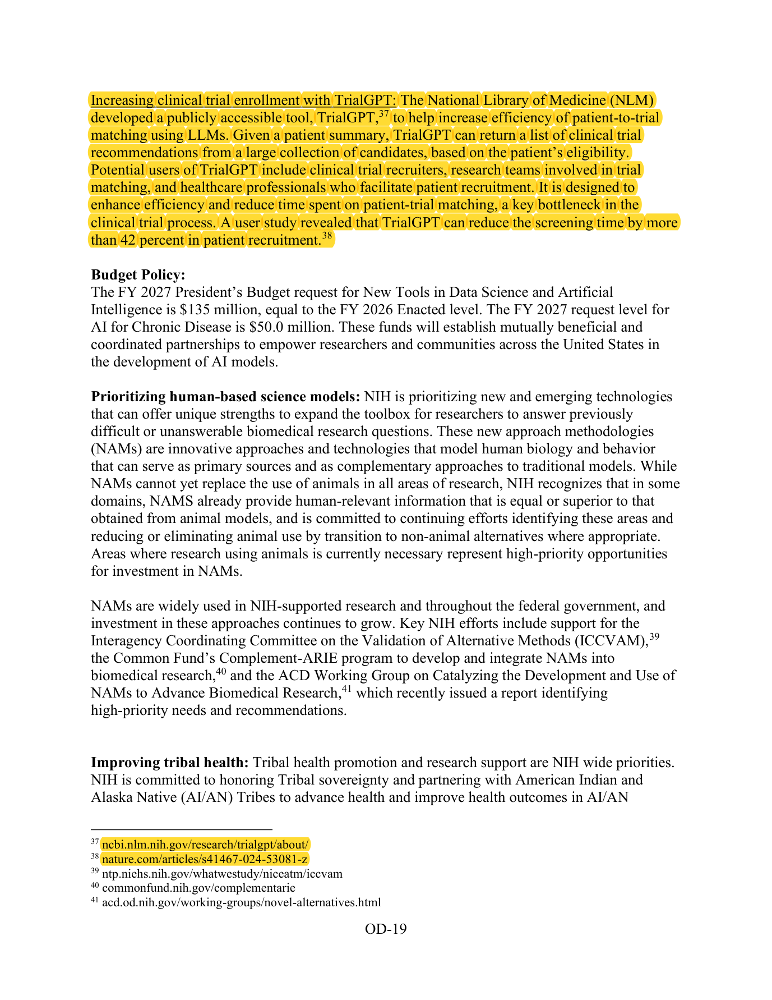
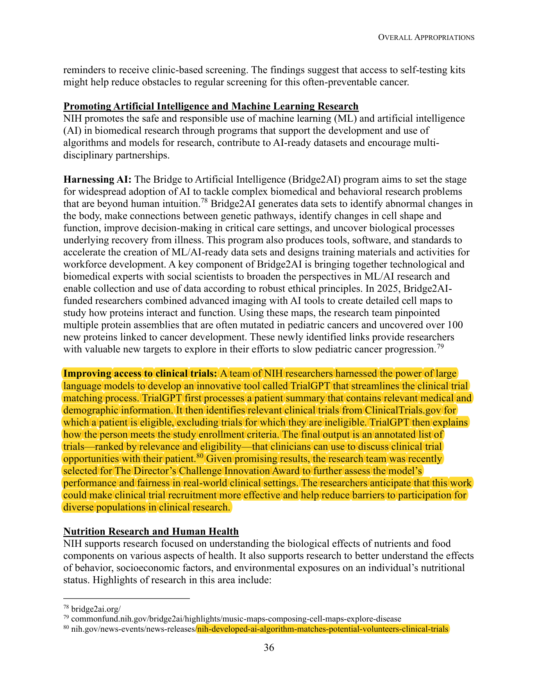

Its Fiscal Year 2027 budget request names TrialGPT outright — in four separate documents.
Three of the request’s volumes carry a distinct TrialGPT write-up; the fourth — the master overview — bundles them.



The 126-page master volume of the request reproduces the two write-ups above — the Executive Summary’s on page 19 and the Appropriations one on page 36 — making four separate PDFs in all.
Open the Consolidated Overview (PDF)Each year the President submits a budget request to Congress, and NIH accompanies it with a justification of its funding — a limited account of its mission and the scientific accomplishments it considers most representative. The audience is congressional appropriators, and space for specific projects is scarce.
Being named there — in the Executive Summary, alongside NIH’s flagship data-science and AI priorities — places TrialGPT among the handful of results NIH chose to represent its research to Congress for the coming fiscal year.